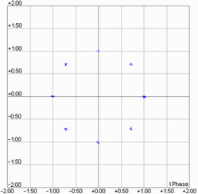
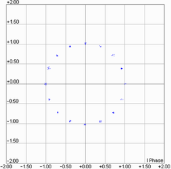
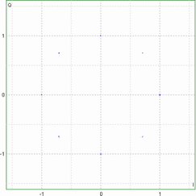
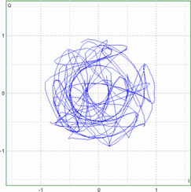
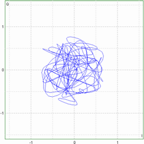

The GSM multi-evaluation measurement provides some softkey/hotkey combinations which have no equivalent in the configuration dialog. Most of these hotkeys provide display configurations (like diagram scaling). They are self-explanatory and do not have any remote-control commands assigned.
- Softkeys "Signaling Parameter" and "GSM Signaling":
These softkeys are displayed only while the combined signal path scenario is active and are provided by the GSM signaling application selected as master application.
While one of these softkeys is selected, the "Config" hotkey opens the configuration dialog of the signaling application, not the configuration dialog of the measurement. - Hotkeys "Multi Evaluation" > "Rotation" and "I/Q Filter":
These hotkeys configure the I/Q constellation diagram and are displayed only while the corresponding single view is displayed.
Provides access to the most essential settings of the "GSM Signaling" application.
Remote command:Use the remote-control commands of the signaling application.
Select this softkey and press ON | OFF to turn the downlink signal transmission on or off.
Press the softkey two times (select it and press it again) to switch to the signaling application.
Remote command:Use the remote-control commands of the signaling application.
Select this softkey to vary GPRF generator signals during non signaling tests. Use the appropriate softkey/hotkey combination to access the generator parameters directly from the GSM measurement GUI.
The "Configure Generator..." hotkey opens the configuration tree of the connected GPRF generator instance.
According to 3GPP TS 100.959 the 8PSK (16-QAM) symbols are continuously rotated with 3π/8 (π/4) radians per symbol before pulse shaping. Due to the rotation zero crossings in the vector diagram are avoided, however, the number of possible symbol point locations in the constellation diagram is doubled. "Rotation" specifies whether the 3π/8 (π/4) rotation is subtracted off before the symbols are displayed in the constellation diagram.
The setting is not valid for GMSK-modulated signals; see following table.
Modulation | Rotation | I/Q filter |
|---|---|---|
GMSK | not used | Unfiltered |
8PSK / 16-QAM | Removed | ISI removed |
8PSK / 16-QAM | Not removed (no correction of received signal) | ISI removed Unfiltered 90 kHz |
The examples below show an 8PSK-modulated signal.
"Removed" | The constellation points appear as if no phase rotation occurred; the constellation diagram contains 8 symbol point locations . The symbol mapping of the modulating bits into the 8 symbols is in accordance with specification 3GPP TS 100.959.  |
"Not Removed" | The phase-rotated constellation points are displayed; the constellation diagram contains 16 symbol point locations.  |
Specifies whether the I/Q data is filtered to eliminate the inter-symbol interference (ISI) at all constellation points and selects the diagram type.
GMSK modulated signals are always unfiltered; see Table "Modulation type dependencies".
"ISI Removed" | The constellation points appear at fixed locations. No trajectories between the points are drawn. The number of points depends on the rotation setting.  |
"Unfiltered" | No I/Q filter applied. The diagram shows the trajectory of the modulation vector. Due to the effect of the 3π/8 rotation, the trajectory remains outside a circle around the origin.  |
"90 kHz" | 90 kHz filter applied. The standard stipulates this filter for EVM measurements, so the I/Q diagram shows the modulation vector that the EVM is based on. Like in the "Unfiltered" setting, the trajectory of the modulation vector is drawn.  |